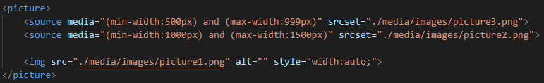

The picture element gives developers more flexebility in specifying image resource.
The most common use of the picture element will be for art direction in responsive designs. Instead of having one image that is scaled up or down based on the viewport width, multiple images can be designed to fill the browser viewport much more nicely.
The picture element contains two tags, one or more source tags and an image tag.
The browser will look for the first source element where the media query matches the current viewport width, and then it will display the proper image specified in the srcset attribute. The img element is required as the last child of the picture element, as a fallback option of no other source tag matches.
This element works similarly to video and audio elements. Different sopurces are set up and the first sources that fits the preferences is the one to be used.
In the example below it seems best to incorporate min width and max width into the media queries in order to make the pictures you want to be displayed at certain widths to actually display correctly. The srcset attribute seems to not automatically complete to the filenames found in the directory you are in, however it does work for file paths despite information found online only specifying it is for urls.
Change the width of the browser!
This is how its coded:
None
The global attributes are supported. Global
The event atttributes are suported. Event Attributes